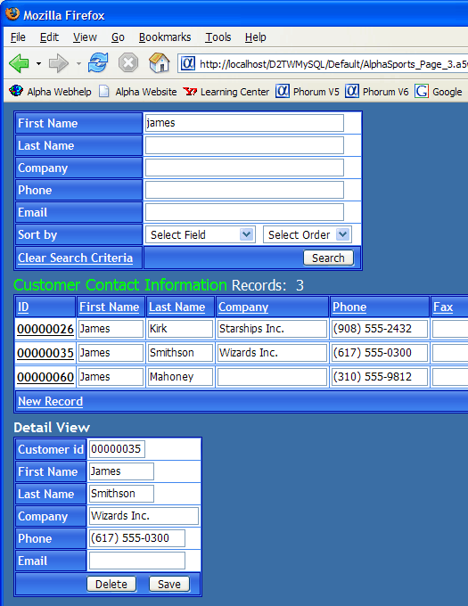

Adding a Detail View Form
The detail view form provides a single record view that allows you to read, edit, delete, and insert records. The display format will show any selection of fields, even if they are not in the grid.
Opening a Grid Component from the HTML Editor
In the Web Projects Control Panel select the "AlphaSports_Customer_Grid" page.
Click Edit to display the HTML Editor.
Double click the grid component that is on the page.
Click OK to agree that you want to edit the component.
Display the Component Type page.
Select the Read only radio button.
Check the Grid contains a 'Detail View' part check box. The Detail View is the form used to add, delete, and edit records.
The Detail View form allows you to display any set of fields from a record. You can add records, delete records, or edit existing records. You can optionally disable any of these capabilities.
Display the Detail View > Fields page.
Select the "Customer_Id", "Firstname", "Lastname", Company", "Phone", and "Email" fields and click
 .
.Check the Detail view is editable check box.
Click OK to change all the fields on the Detail View to editable TextBox controls.
Select the "Customer_Id" field in the Hyperlink field list and click OK. This is the field that will connect the record in the Detail View form with the record in the grid. Both the grid and the detail view forms must have a unique key value that links them together. Note : The grid must also contain, but not necessary display, the hyperlink field.
Display the Grid > Fields page.
Select the "Customer_Id" field in the Selected Fields list.
Change its Display Settings > Control type to "Link". The Customer_Id field will uniquely connect each record in the grid to its detail view.
Change the Link Properties > Link address type to "DetailView link".
Change the labels used for the Firstname and Lastname fields.
Click Save and close the Grid Builder. This returns you to the HTML Editor.
Previewing the Grid in the Live Preview Directory
Click
 on the toolbar to preview the page in the Live Preview directory. This is different from viewing the grid on the Live Preview tab. In this case the Application Server processes any Xbasic on the page and your browser displays the results. The important difference from previewing in your local webroot is that files previewed to the Live Preview directory can not be seen by web users.
on the toolbar to preview the page in the Live Preview directory. This is different from viewing the grid on the Live Preview tab. In this case the Application Server processes any Xbasic on the page and your browser displays the results. The important difference from previewing in your local webroot is that files previewed to the Live Preview directory can not be seen by web users.Switch to your browser.
Enter "james" into the First Name field of the search form and click Search.
Click the ID number of one of the records in the grid. The selected record will appear in the Detail View. You should have something that looks like this:

Experimenting with the Detail View
Click New Record.
Enter values into the Detail View fields.
Click Add.
Select a record in the grid.
Click Delete.
See Also